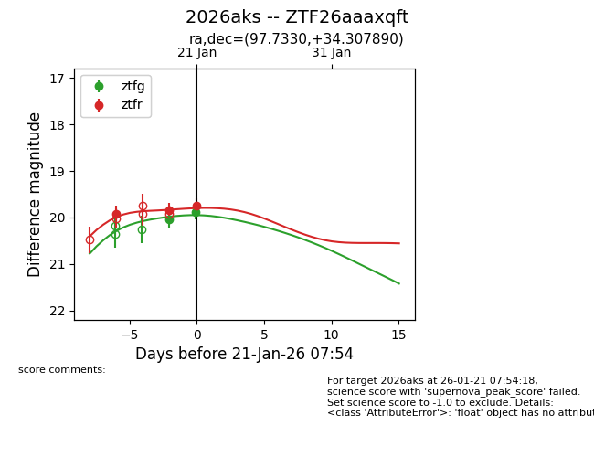
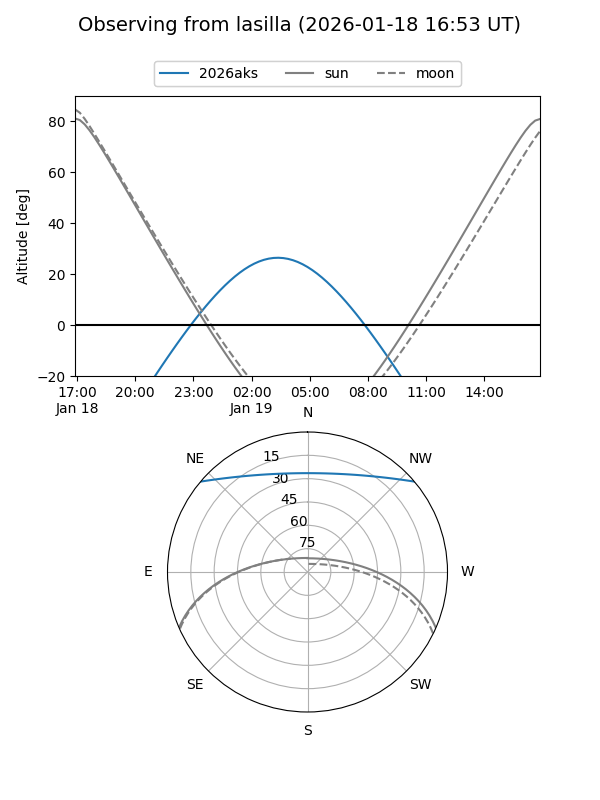
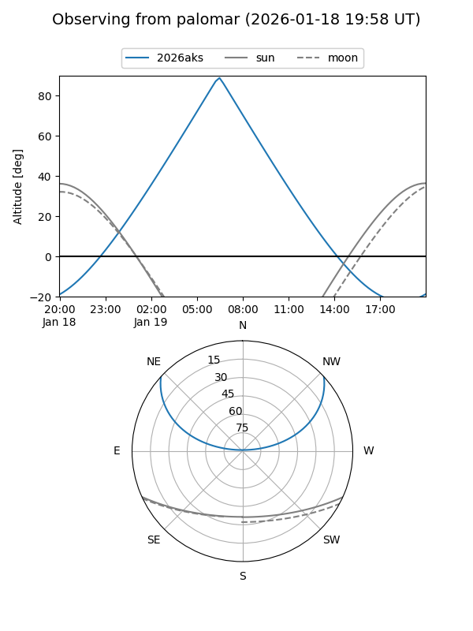
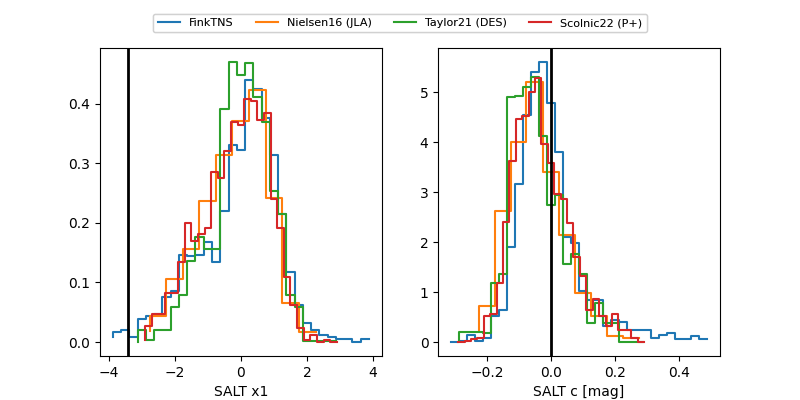

2026aks
Target 2026aks at 2026-01-21 06:21
Aliases and brokers:
FINK: link
Lasair: link
ALeRCE: link
TNS: link
YSE: link
alt names
ZTF26aaaxqft (ztf,fink_ztf)
2026aks (tns,yse)
Coordinates:
equatorial (ra, dec) = 97.7330,+34.30789
equatorial (HMS+DMS) = 06:30:55.92,+34:18:28.41
galactic (l, b) = (179.8825,+11.02994)
Flags:
Photometry:
last ztfg=20.04, ztfr=19.84
1 ztfg, 2 ztfr detections
Lightcurve

Visibility


Additional plots
